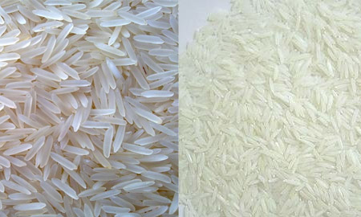
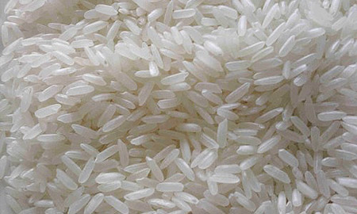
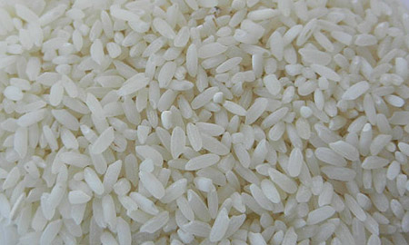

Import Commodity
Rice
We import quality rice varieties into Madagascar for domestic distribution. Basmati and non-basmati varieties available, sourced from leading rice-producing countries.

Import Commodity
Rice Varieties

Raw / Parboiled 5% Broken
100% Sortex, Well Milled
- Broken5%
- Grain Length6.2 mm
- Moisture14% Max
- Damage / Discolor1% Max
- Foreign Material0.25% Max
- Chalky5% Max

Raw / Parboiled 25% Broken
100% Sortex, Well Milled
- Length Before Cooking4.5 mm
- Moisture Content14% Max
- Chalky Grains8% Max
- Foreign Matter2% Max
- Paddy Grain20 Pcs/Kg Max
Indian Traditional Basmati Rice
100% Sortex, Well Milled
- Moisture12.00% Max
- Chalky Kernels4.00% Max
- Damaged Kernels1% Max
- Yellow Kernels1% Max
- Under Milled & Red Kernels1% Max
- Average Grain Length7.2 – 7.6 mm
Origin
India · Thailand · Pakistan
Enquire About Rice
Specify the variety, grade, quantity, and delivery details.